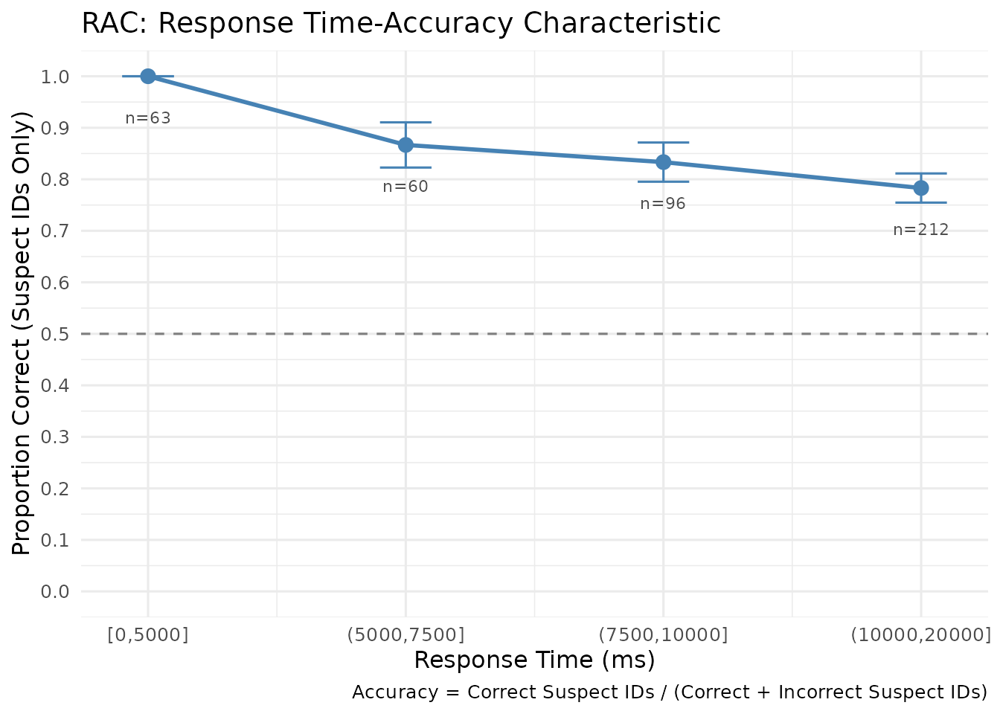
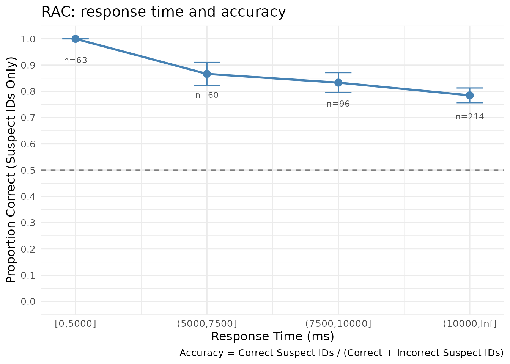
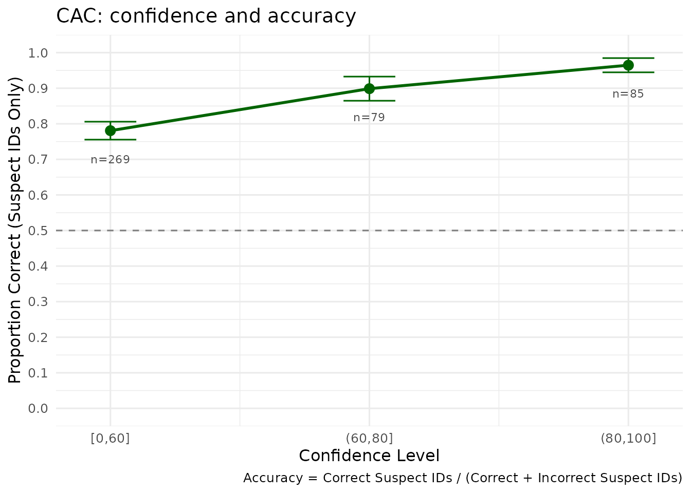
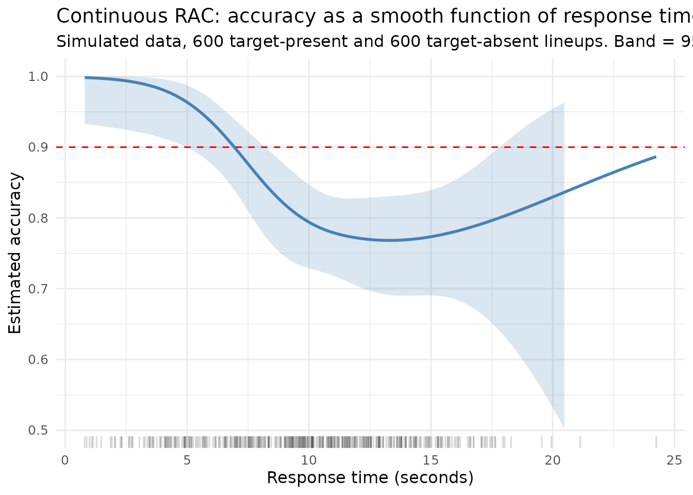
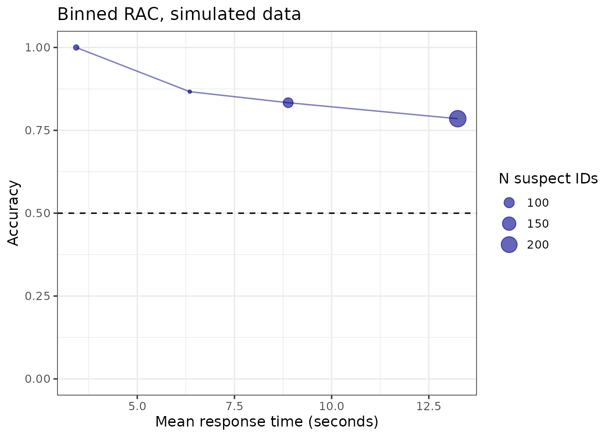

RAC Analysis: Response Time-Accuracy Characteristics
Colin G. Tredoux
Tamsyn M. Naylor
2026-10-28
Source:vignettes/rac_analysis.Rmd
rac_analysis.RmdAcknowledgement. Large language models supplied by Anthropic and OpenAI were used in preparing this vignette, to assist with checking code, testing the veracity of the approaches described, and on occasion editing the text. Responsibility for the content rests with the authors.
Introduction
This vignette demonstrates RAC (Response Time-Accuracy Characteristic) analysis for eyewitness lineup data.
The RAC plot is recent, and the implementation here follows pyWitness (Mickes et al., 2024). The underlying idea is not recent at all. That identification accuracy is related to how long a witness takes to decide has been an active research question since at least the early 1990s: Sporer (1993) reported that decision times for correct identifications were shorter than for incorrect ones, and used decision time along with confidence to postdict accuracy. What RAC adds is a display that puts response time on the same footing as the CAC plot puts confidence, not a new finding.
Why response time?
- Fast responses often indicate strong memory. The intuition is that a strong memory produces recognition that feels automatic — the face is recognised rather than worked out by comparing candidates one against another. This is related to Tulving’s notion of ecphory, the process by which a retrieval cue contacts a stored trace and produces the experience of remembering; a strong trace yields an immediate ecphoric experience, a weak one yields deliberation. Dunning and Perretta (2002) made the automaticity version of this argument explicitly.
- Response time is objective. Unlike confidence, it is recorded rather than reported, so it is less exposed to post-event influence and to feedback from the lineup administrator.
- Complementary to confidence. RAC and CAC together may give a fuller picture than either alone.
- Forensically practical. Response time can be captured automatically in video and computer-administered lineups at no cost to the witness.
The 10-to-12-second rule, and what happened to it
Any discussion of response time in this area has to deal with the best-known claim about it. Dunning and Perretta (2002) reported that a boundary of roughly 10 to 12 seconds separated accurate from inaccurate positive identifications: witnesses deciding faster than that were close to 90% accurate, those taking longer around 50%.
The rule did not survive replication. Weber, Brewer, Wells, Semmler and Keast (2004) analysed a large set of studies and found that although accurate identifications were indeed faster than inaccurate ones, the boundary that best separated them varied enormously between experiments — from about 5 seconds to about 29 seconds. There is a real speed-accuracy relationship; there is no universal number.
The practical consequence is worth stating plainly, because it shapes how this vignette proceeds. A time boundary should be estimated from the data in hand, with an interval around it, rather than imported from another study. The continuous approach below does exactly that.
Simulating Data with Response Times
Few existing datasets include response times, so we simulate. The
choices are generated by simulate_lineup_data(), which
draws a memory strength for every lineup member separately and gives
each foil its own mean via foil_bias, so the foils are not
interchangeable.
Response times are then added by an explicit model: time falls as the strength of the evidence rises, plus noise. This part is a construction, not a simulation of any published finding, and the noise is set so that the correlation between response time and confidence is moderate — about −0.5 — rather than the near-perfect relationship that would make the demonstration trivial.
set.seed(123)
lineup_data <- as.data.frame(simulate_lineup_data(
n_tp = 600, n_ta = 600,
d_prime = 1.6,
c_criterion = 0.9,
lineup_size = 6,
conf_levels = 9,
foil_bias = c(0.4, 0.2, 0.0, -0.5, -1.1),
seed = 123
))
# Response time falls as evidence strength (here, ordinal confidence) rises.
# The noise term is deliberately large: response time is a noisy indicator.
lineup_data$response_time <- round(pmax(
800,
14000 - 900 * lineup_data$confidence + rnorm(nrow(lineup_data), 0, 3500)
))
# Put confidence on a 20-100 scale, as the other vignettes do
lineup_data$confidence <- round(seq(20, 100, length.out = 9))[lineup_data$confidence]
table(lineup_data$target_present, lineup_data$identification)
#>
#> filler reject suspect
#> FALSE 350 180 70
#> TRUE 190 47 363
cor(lineup_data$response_time, lineup_data$confidence)
#> [1] -0.5307128Response Time and Accuracy: the simplest analysis
Before any binning, it is worth looking at the plain correlation between response time and accuracy. Accuracy is binary, so this is a point-biserial correlation — which is just Pearson’s r with one dichotomous variable, and needs no special machinery.
The choice of which trials to include turns out to matter a great deal:
# All trials: "correct" means a suspect ID when the target was present, or a
# rejection when it was absent
all_trials <- lineup_data
all_trials$correct <- as.integer(
(all_trials$target_present & all_trials$identification == "suspect") |
(!all_trials$target_present & all_trials$identification == "reject")
)
# Suspect identifications only. Among these, "correct" is simply target-present
choosers <- lineup_data[lineup_data$identification == "suspect", ]
choosers$correct <- as.integer(choosers$target_present)
knitr::kable(
data.frame(
Sample = c("All trials", "Suspect identifications only"),
n = c(nrow(all_trials), nrow(choosers)),
`Point-biserial r` = round(c(
cor(all_trials$response_time, all_trials$correct),
cor(choosers$response_time, choosers$correct)
), 3),
check.names = FALSE
),
row.names = FALSE,
caption = "Correlation between response time and accuracy, simulated data (1200 lineups of size 6)."
)| Sample | n | Point-biserial r |
|---|---|---|
| All trials | 1200 | -0.050 |
| Suspect identifications only | 433 | -0.183 |
The correlation across all trials is close to zero; restricting to witnesses who identified the suspect roughly triples it. This is not a trick. Rejections are slow for a quite different reason than false identifications are — a witness who searches the lineup thoroughly and then declines to choose is being careful, not uncertain in the way a slow chooser is. Pooling the two mixes two different relationships between time and accuracy and mostly cancels them out.
This is why RAC, like CAC, is computed on choosers. It is also a reminder that the headline correlation in a response-time study depends on a decision that is easy to leave unstated.
Basic RAC Analysis
Choosing time bins
make_rac() takes bin edges. Binning response time is
conventional, and it is what makes the RAC plot comparable to published
ones, but it is not necessary: response time is
continuous and nothing forces us to discard that. See A continuous alternative
below.
Where bins are used, they must be chosen with reference to the data. Bins fixed in advance frequently leave the extremes empty, and an accuracy estimated from one or two observations will plot as a point indistinguishable from one based on two hundred.
Compute and plot
rac_result <- make_rac(
data = lineup_data,
lineup_size = 6,
time_bins = time_bins,
show_plot = FALSE
)
print(rac_result)
#>
#> === Lineup RAC Analysis ===
#>
#> Overall Accuracy: 0.838
#> Total Suspect IDs: 433
#> Lineup size: 6
#>
#> RAC Data:
#> # A tibble: 4 × 7
#> response_time mean_time n_correct n_incorrect n_total accuracy se
#> <chr> <dbl> <int> <int> <int> <dbl> <dbl>
#> 1 [0,5000] 3429. 63 0 63 1 0
#> 2 (5000,7500] 6321. 52 8 60 0.867 0.0439
#> 3 (7500,10000] 8838. 80 16 96 0.833 0.0380
#> 4 (10000,20000] 13101. 166 46 212 0.783 0.0283
#>
#> Plot: save this object first, then extract it with x$plot
rac_result$plot + theme_minimal(base_size = 12)
Accuracy falls as responses get slower, from about 100% in the fastest bin to about 78% in the slowest. The relationship is real but shallower than the corresponding CAC relationship, which is the usual finding: response time carries information about accuracy, but less of it than confidence does.
RAC and CAC Compared
rac <- make_rac(lineup_data, time_bins = time_bins, show_plot = FALSE)
cac <- make_cac(lineup_data, confidence_bins = c(0, 60, 80, 100),
show_plot = FALSE)
rac$plot + ggtitle("RAC: response time and accuracy") +
theme_minimal(base_size = 12)
cac$plot + ggtitle("CAC: confidence and accuracy") +
theme_minimal(base_size = 12)
| Feature | RAC | CAC |
|---|---|---|
| X-axis | Response time | Confidence |
| Measure | Recorded automatically | Self-reported |
| Interpretation | Faster is taken to indicate stronger memory | Higher confidence is taken to indicate stronger memory |
| Robustness | Not affected by feedback or post-event information | Can be inflated by confirming feedback |
| Typical strength | Weaker relationship with accuracy | Stronger relationship with accuracy |
The two are related but not redundant: in these data the correlation between confidence and response time is about -0.53, which leaves a good deal of independent variation.
Fine-Grained Analysis
Finer bins reveal more structure, at the cost of stability:
fine_bins <- seq(0, 20000, by = 2500)
rac_fine <- make_rac(lineup_data, time_bins = fine_bins, show_plot = FALSE,
show_errorbars = TRUE, show_n = TRUE)
knitr::kable(
as.data.frame(rac_fine$rac_data)[, c("response_time", "n_total", "accuracy")],
digits = 3, row.names = FALSE,
caption = "RAC with 2.5-second bins, simulated data. Note the small n in the extreme bins."
)| response_time | n_total | accuracy |
|---|---|---|
| [0,2500] | 15 | 1.000 |
| (2500,5000] | 48 | 1.000 |
| (5000,7500] | 60 | 0.867 |
| (7500,10000] | 96 | 0.833 |
| (10000,12500] | 97 | 0.804 |
| (12500,15000] | 71 | 0.775 |
| (15000,17500] | 36 | 0.750 |
| (17500,20000] | 8 | 0.750 |
The extreme bins carry few observations, and their accuracy estimates
should not be read as though they were as trustworthy as the
well-populated middle. Always inspect n_total.
This is the fundamental awkwardness of binning: wide bins hide the shape of the relationship, narrow bins produce estimates too noisy to interpret, and there is no setting that avoids both. The next section does away with the choice.
A continuous alternative to binning
Response time is continuous, and accuracy among suspect identifications is binary — which is exactly the situation logistic regression was designed for. Rather than cutting time into bins and computing a proportion within each, we can estimate accuracy as a smooth function of time directly.
A spline term lets the shape be determined by the data rather than assumed:
fit <- glm(correct ~ splines::ns(response_time, df = 3),
family = binomial, data = choosers)
grid <- data.frame(
response_time = seq(min(choosers$response_time),
max(choosers$response_time), length.out = 200)
)
pred <- predict(fit, newdata = grid, type = "link", se.fit = TRUE)
grid$accuracy <- plogis(pred$fit)
grid$lower <- plogis(pred$fit - 1.96 * pred$se.fit)
grid$upper <- plogis(pred$fit + 1.96 * pred$se.fit)
ggplot(grid, aes(x = response_time / 1000, y = accuracy)) +
geom_ribbon(aes(ymin = lower, ymax = upper), alpha = 0.2, fill = "steelblue") +
geom_line(linewidth = 1, colour = "steelblue") +
geom_hline(yintercept = 0.9, linetype = "dashed", colour = "red") +
geom_rug(data = choosers,
aes(x = response_time / 1000, y = NULL), alpha = 0.15) +
scale_y_continuous(limits = c(0.5, 1)) +
labs(
x = "Response time (seconds)",
y = "Estimated accuracy",
title = "Continuous RAC: accuracy as a smooth function of response time",
subtitle = "Simulated data, 600 target-present and 600 target-absent lineups. Band = 95% CI; dashed line = 90% accuracy"
) +
theme_minimal(base_size = 12)
This uses every observation, requires no arbitrary boundaries, and comes with a confidence band that widens honestly where the data thin out — visible in the rug along the bottom.
Estimating a time boundary
With a fitted curve, the question Dunning and Perretta asked can be put directly: up to what response time is estimated accuracy at least 90%?
above <- grid$response_time[grid$accuracy >= 0.90]
boundary <- if (length(above) > 0) max(above) else NA
cat("Estimated accuracy at 3 s:", round(approx(grid$response_time, grid$accuracy, 3000)$y, 3), "\n")
#> Estimated accuracy at 3 s: 0.991
cat("Estimated accuracy at 8 s:", round(approx(grid$response_time, grid$accuracy, 8000)$y, 3), "\n")
#> Estimated accuracy at 8 s: 0.855
cat("Estimated accuracy at 15 s:", round(approx(grid$response_time, grid$accuracy, 15000)$y, 3), "\n\n")
#> Estimated accuracy at 15 s: 0.773
cat("Accuracy is at least 90% up to about", round(boundary / 1000, 1), "seconds\n")
#> Accuracy is at least 90% up to about 6.9 secondsFor these simulated data the boundary falls near 6.9 seconds. That number is a property of this dataset, and the point of Weber et al. (2004) is precisely that it will not transfer: had the simulation used a different criterion or a different d′, the boundary would move. Reporting it with the interval around it, and refitting on new data rather than importing the number, is the appropriate use of the method.
A note on what is being estimated. Because accuracy among suspect identifications is a positive predictive value, it depends on the proportion of target-present lineups in the design — 50% here, which is not a field base rate. The curve answers “given a suspect identification at this speed, in a study of this composition, how often is it correct?” That is the same quantity the binned RAC estimates; the continuous version simply makes it estimable without bins.
Comparing Conditions
RAC can compare experimental conditions. The comparison is only meaningful if the conditions genuinely differ, so we simulate two that do: Condition 1 has stronger memory evidence than Condition 2.
make_condition <- function(d_prime, seed) {
d <- as.data.frame(simulate_lineup_data(
n_tp = 400, n_ta = 400, d_prime = d_prime, c_criterion = 0.9,
lineup_size = 6, conf_levels = 9,
foil_bias = c(0.4, 0.2, 0.0, -0.5, -1.1), seed = seed
))
d$response_time <- round(pmax(
800, 14000 - 900 * d$confidence + rnorm(nrow(d), 0, 3500)
))
d$confidence <- round(seq(20, 100, length.out = 9))[d$confidence]
d
}
data_condition1 <- make_condition(d_prime = 2.0, seed = 201) # good viewing
data_condition2 <- make_condition(d_prime = 1.0, seed = 202) # poor viewing
condition1_rac <- make_rac(data_condition1, time_bins = time_bins,
show_plot = FALSE)
condition2_rac <- make_rac(data_condition2, time_bins = time_bins,
show_plot = FALSE)
comparison <- data.frame(
`Time bin` = condition1_rac$rac_data$response_time,
`Condition 1 (d' = 2.0)` = round(condition1_rac$rac_data$accuracy, 3),
`Condition 2 (d' = 1.0)` = round(condition2_rac$rac_data$accuracy, 3),
check.names = FALSE
)
knitr::kable(
comparison, row.names = FALSE,
caption = "RAC accuracy by condition, simulated data (400 target-present and 400 target-absent lineups per condition)."
)| Time bin | Condition 1 (d’ = 2.0) | Condition 2 (d’ = 1.0) |
|---|---|---|
| [0,5000] | 0.966 | 0.923 |
| (5000,7500] | 0.926 | 0.708 |
| (7500,10000] | 0.914 | 0.721 |
| (10000,20000] | 0.806 | 0.798 |
Condition 1 is more accurate at every response time. Note that this
is a descriptive comparison: testing whether two RAC curves differ
requires a bootstrap over witnesses, which the package does not yet
provide for RAC. The continuous model above offers a route to it, since
a condition term and its interaction with the time spline can simply be
added to the glm() call.
Custom Analysis
The binned data is available for plotting of your own:
rac_data <- rac_result$rac_data
ggplot(rac_data, aes(x = mean_time / 1000, y = accuracy)) +
geom_point(aes(size = n_total), colour = "darkblue", alpha = 0.6) +
geom_line(colour = "darkblue", alpha = 0.5) +
theme_bw(base_size = 12) +
labs(
x = "Mean response time (seconds)",
y = "Accuracy",
title = "Binned RAC, simulated data",
size = "N suspect IDs"
) +
scale_y_continuous(limits = c(0, 1)) +
geom_hline(yintercept = 0.5, linetype = "dashed")
A smoother is deliberately not fitted through the four binned points here. Fitting a curve to summaries that have already discarded the within-bin variation compounds the loss rather than repairing it, and the resulting confidence band understates the uncertainty because it ignores the sample sizes behind each point. If a smooth curve is what you want, fit it to the raw observations, as in the previous section.
Technical Details
How RAC is computed
For each response time bin:
Where:
- Correct suspect IDs: target-present lineups in which the suspect was identified
- Incorrect suspect IDs: target-absent lineups in which the designated innocent suspect was identified. Where no innocent suspect is designated, foil identifications divided by lineup size are used as an estimate instead
Standard errors
Standard errors assume a binomial distribution:
with the accuracy and the number of suspect identifications in the bin. This treats each bin independently and takes no account of the curve being smooth, which is a further reason the continuous estimate is preferable when a shape is what interests you.
Using RAC with Real Data
Your data needs three columns, and a response time column:
my_data <- data.frame(
target_present = c(TRUE, FALSE, TRUE, FALSE, TRUE, TRUE),
identification = c("suspect", "filler", "suspect", "suspect",
"reject", "suspect"),
response_time = c(8234, 12456, 6789, 15020, 9310, 4870)
)
str(my_data)
#> 'data.frame': 6 obs. of 3 variables:
#> $ target_present: logi TRUE FALSE TRUE FALSE TRUE TRUE
#> $ identification: chr "suspect" "filler" "suspect" "suspect" ...
#> $ response_time : num 8234 12456 6789 15020 9310 ...With a dataset of adequate size you would pass it to
make_rac() exactly as the simulated data was passed above.
Six rows is far too few to bin, so there is no point running it
here.
Points to watch:
- Units. Response times must all be in the same units. The package assumes milliseconds.
- Bins. Inspect the distribution first, as above. Four to six bins is common, but the number matters far less than whether each is populated.
- Extreme values. Very long times often mean an interruption rather than deliberation. Consider capping rather than deleting, and report what you did.
- Missing times. Trials without a recorded time are dropped, so check how many.
- Sequential lineups. Response time means something different when members are viewed one at a time; total time confounds decision time with viewing time.
Exporting Results
# As CSV. Written to a temporary directory here; use your own path
outfile <- file.path(tempdir(), "rac_analysis.csv")
write.csv(rac_result$rac_data, outfile, row.names = FALSE)
knitr::kable(rac_result$rac_data, digits = 3,
caption = "RAC analysis results, simulated data.")| response_time | mean_time | n_correct | n_incorrect | n_total | accuracy | se |
|---|---|---|---|---|---|---|
| [0,5000] | 3428.746 | 63 | 0 | 63 | 1.000 | 0.000 |
| (5000,7500] | 6320.827 | 52 | 8 | 60 | 0.867 | 0.044 |
| (7500,10000] | 8838.262 | 80 | 16 | 96 | 0.833 | 0.038 |
| (10000,20000] | 13101.422 | 166 | 46 | 212 | 0.783 | 0.028 |
Summary
RAC analysis puts response time on the same footing as the CAC plot puts confidence. Points worth carrying away:
- The idea is old (Sporer, 1993); the plot is new.
- Compute it on choosers. Pooling choosers with rejections mixes two different speed-accuracy relationships and cancels most of the signal.
- There is no universal time boundary. Dunning and Perretta’s 10-to-12-second rule did not replicate, and the best-separating time ranges from about 5 to 29 seconds across studies (Weber et al., 2004). Estimate it from your data.
- Binning is conventional, not necessary. A logistic regression with a spline uses every observation, needs no boundaries, and gives an honest confidence band.
- Response time is a weaker indicator of accuracy than confidence, and worth reporting alongside it rather than instead of it.
References
Dunning, D., & Perretta, S. (2002). Automaticity and eyewitness accuracy: A 10- to 12-second rule for distinguishing accurate from inaccurate positive identifications. Journal of Applied Psychology, 87(5), 951-962.
Mickes, L. (2015). Receiver operating characteristic analysis and confidence-accuracy characteristic analysis in investigations of system variables and estimator variables that affect eyewitness memory. Journal of Applied Research in Memory and Cognition, 4(2), 93-102.
Mickes, L., Seale-Carlisle, T. M., Chen, X., & Boogert, S. (2024). pyWitness 1.0: A python eyewitness identification analysis toolkit. Behavior Research Methods, 56, 1533-1550.
Seale-Carlisle, T. M., Colloff, M. F., Flowe, H. D., Wells, W., Wixted, J. T., & Mickes, L. (2019). Confidence and response time as indicators of eyewitness identification accuracy in the lab and in the real world. Journal of Applied Research in Memory and Cognition, 8(4), 420-428.
Sporer, S. L. (1993). Eyewitness identification accuracy, confidence, and decision times in simultaneous and sequential lineups. Journal of Applied Psychology, 78(1), 22-33.
Weber, N., Brewer, N., Wells, G. L., Semmler, C., & Keast, A. (2004). Eyewitness identification accuracy and response latency: The unruly 10-12 second rule. Journal of Experimental Psychology: Applied, 10(3), 139-147.
Wixted, J. T., & Wells, G. L. (2017). The relationship between eyewitness confidence and identification accuracy: A new synthesis. Psychological Science in the Public Interest, 18(1), 10-65.
This vignette was created for r4lineups version 2.2.0